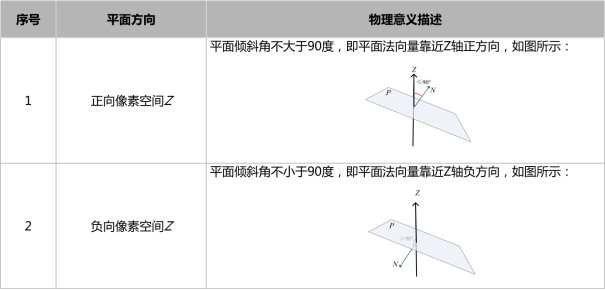

Trong đo lường 3D, thường cần thực hiện khớp các điểm không gian ba chiều trong vùng phát hiện của ảnh chiều sâu để thu được một mặt phẳng tối ưu, từ đó có thể thực hiện các thao tác tiếp theo như chiếu, đo chiều cao và đo thể tích trên mặt phẳng cơ sở này. Công cụ khớp phẳng chủ yếu dựa vào một số điểm không gian ba chiều để tính toán biểu thức giải tích của mặt phẳng ba chiều.
| Phân loại | Tên tham số | Mô tả tham số |
|---|---|---|
| Cửa sổ thuộc tính | Kích hoạt khớp tập điểm 3D | Chọn “Có”, tham số chuỗi dữ liệu sẽ hiển thị tham số tập điểm 3D đầu vào, và sử dụng tập điểm 3D này để khớp mặt phẳng. |
| Phương pháp khớp | Được chia thành hai loại: diện tích và điểm. | |
| Hướng mặt phẳng | Được chia thành hai loại: không gian pixel dương và không gian pixel âm. |
|
| Loại ROI | Vùng cần phát hiện, được chia thành 8 loại: toàn bộ ảnh, hình chữ nhật, hình chữ nhật affine, hình tròn, đoạn vòng tròn, elip, đa giác. | |
| Kích hoạt mặt nạ | Có kích hoạt mặt nạ hay không, chọn “Có” sẽ hiển thị các tham số như số lượng mặt nạ, số thứ tự mặt nạ, hình dạng mặt nạ, v.v. | |
| Số lượng mặt nạ | Thiết lập số lượng mặt nạ được kích hoạt, phạm vi giá trị [1, 99]. | |
| Số thứ tự mặt nạ | Chỉ số mặt nạ hiện tại muốn thiết lập. | |
| Loại ROI mặt nạ | Hình dạng mặt nạ hiện tại muốn thiết lập, được chia thành 6 loại: hình chữ nhật, hình chữ nhật affine, hình tròn, đoạn vòng tròn, elip, đa giác. | |
| Tập điểm 2D | Khi phương pháp khớp là điểm thì hiển thị tham số này, dùng để chỉ định các điểm tham gia khớp mặt phẳng. | |
| Phương pháp truy vấn Z | Khi phương pháp khớp là điểm thì hiển thị tham số này, được chia thành ba loại: pixel đơn lẻ, trung vị lân cận, giá trị trung bình lân cận. |
|
| Số lượng lân cận X, Y | Khi phương pháp truy vấn Z là trung vị lân cận hoặc giá trị trung bình lân cận thì hiển thị tham số này, dùng để thiết lập kích thước lân cận X, Y, phạm vi giá trị [1, 25]. | |
| Cửa sổ ảnh | Ảnh chiều sâu | Hiển thị ảnh chiều sâu cần phát hiện, hiển thị dưới dạng ảnh giả màu. |
| Vùng phát hiện | Trên ảnh hiển thị vùng cần phát hiện. | |
| Vùng mặt nạ | Trên ảnh hiển thị vùng mặt nạ. | |
| Chuỗi dữ liệu | Ảnh chiều sâu | Đầu vào ảnh chiều sâu cần phát hiện. |
| Tập điểm 3D đầu vào | Tập điểm 3D dùng để khớp mặt phẳng, chỉ có hiệu lực khi tham số kích hoạt khớp tập điểm 3D trong thanh thuộc tính chọn “Có”. | |
| Biến đổi tuyến tính 2D | Biến đổi tịnh tiến, xoay, thu phóng của mục tiêu so với mẫu. | |
| Giao diện nâng cao | Không | Không |
| Phân loại | Tên tham số | Mô tả tham số |
|---|---|---|
| Cửa sổ giám sát | Ảnh chiều sâu | Chiều dài rộng và kích thước pixel của ảnh, cũng như tham số dữ liệu chiều sâu. |
| Mặt phẳng khớp | Kết quả khớp mặt phẳng đầu ra, bao gồm vector pháp tuyến của mặt phẳng, độ lệch, góc nghiêng, góc xoay. |
|
| Độ phẳng | Độ phẳng của mặt phẳng đầu ra, tức là độ lệch lớn nhất trừ độ lệch nhỏ nhất, đơn vị: mm. | |
| Lỗi khớp | Lỗi khớp của mặt phẳng đầu ra. | |
| Số điểm khớp mặt phẳng | Số điểm tham gia vào khớp mặt phẳng đầu ra. | |
| Kết quả thực thi | Kết quả thực thi của công cụ. | |
| Thời gian thực thi | Thời gian thực thi của công cụ. | |
| Cửa sổ ảnh | Ảnh đầu ra | Hiển thị ảnh chiều sâu đã phát hiện, hiển thị dưới dạng ảnh giả màu. |
| Chuỗi dữ liệu | Giống tham số cửa sổ giám sát, cung cấp cho công cụ tiếp theo sử dụng. |
Vector pháp tuyến：Vector N vuông góc với mặt phẳng, biểu thị hướng của mặt phẳng trong không gian ba chiều, như Hình 1(a) cho thấy.
Góc nghiêng：Góc φ giữa hướng dương trục Z theo chiều kim đồng hồ với vector pháp tuyến N của mặt phẳng, phạm vi giá trị：[0,π] ，như Hình 1(b) cho thấy.
Góc xoay：Góc θ giữa hướng dương trục X theo chiều ngược kim đồng hồ với vector chiếu N0 của vector pháp tuyến, phạm vi giá trị：[0, 2π) ，như Hình 1(b) cho thấy.
Độ lệch：Khoảng cách lệch khi di chuyển gốc tọa độ đến mặt phẳng hiện tại P, nếu hướng di chuyển trùng với hướng vector pháp tuyến thì độ lệch là dương; ngược lại là âm, như Hình 1(c)、(d) cho thấy.

Công cụ khớp phẳng chủ yếu được chia thành ba bước sau:
Bước 1 Cài đặt hướng mặt phẳng：
Khi thu được phương trình mặt phẳng khớp, cần xác định hướng mặt phẳng, tức là hướng của vector pháp tuyến mặt phẳng; hướng mặt phẳng bao gồm hai loại: Z không gian pixel dương và Z không gian pixel âm. Ý nghĩa vật lý cụ thể được trình bày trong bảng dưới đây. Giá trị vector pháp tuyến mặt phẳng thu được từ hai hướng mặt phẳng là ngược nhau, do đó, vector pháp tuyến, độ lệch, góc nghiêng và góc xoay của mặt phẳng cuối cùng cũng khác nhau.

Bước 2 Cài đặt phương pháp khớp và vùng phát hiện
Để thu được dữ liệu điểm không gian ba chiều cần cài đặt phương pháp khớp và vùng phát hiện. Trong đó, phương pháp khớp có hai loại: diện tích và điểm. Dựa trên phương pháp khớp khác nhau, cách cài đặt vùng phát hiện cũng khác nhau.
Khi phương pháp khớp là diện tích, cần cài đặt hình dạng vùng và mặt nạ, trong đó hình dạng vùng hỗ trợ sáu loại vùng phát hiện: hình tròn, elip, đa giác, hình chữ nhật, hình chữ nhật affine hoặc đoạn vòng tròn; mặt nạ hỗ trợ một số lượng nhất định (1~99) các vùng hình tròn, elip, đa giác, hình chữ nhật, hình chữ nhật affine và đoạn vòng tròn. Lúc này, khớp mặt phẳng sử dụng dữ liệu điểm không gian ba chiều trong hình dạng vùng loại trừ vùng mặt nạ để thực hiện khớp.
Khi phương pháp khớp là điểm, cần cài đặt tọa độ 2D và phương pháp truy vấn Z, trong đó tọa độ 2D là tọa độ x, y tương ứng của điểm không gian ba chiều trên mặt phẳng ảnh; cài đặt phương pháp truy vấn Z chủ yếu để thu được giá trị z của điểm không gian ba chiều thông qua phương pháp truy vấn pixel đơn lẻ, trung vị lân cận hoặc giá trị trung bình lân cận, trong đó có thể cài đặt kích thước lân cận. Lúc này, khớp mặt phẳng sử dụng dữ liệu điểm không gian ba chiều được tạo thành từ tọa độ 2D và giá trị z thu được từ phương pháp truy vấn Z để thực hiện khớp.
Bước 3 Thực hiện khớp và xuất kết quả
Sau khi đã cài đặt hướng mặt phẳng, phương pháp khớp và vùng phát hiện, có thể thực hiện khớp mặt phẳng. Kết quả đầu ra bao gồm: vector pháp tuyến của mặt phẳng, độ lệch, góc nghiêng và góc xoay, lỗi RMS của phép khớp, cũng như số lượng điểm ba chiều được sử dụng để khớp mặt phẳng.
Không có
参见“\Samples\3D\深度图\3D测量工具.gvp”。